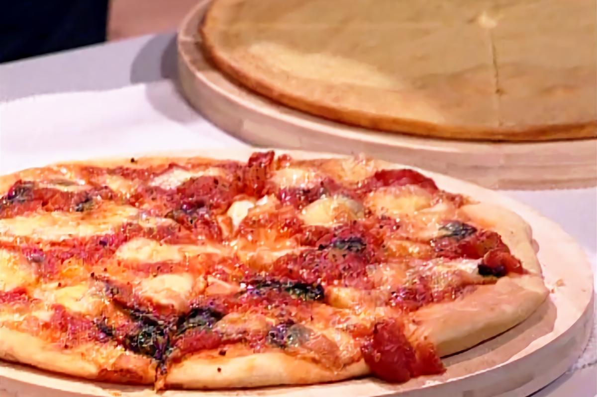

Pizza y faina

Que decir de la pizza, es toda una pasion argentina, infaltable los viernes / sabados.
Sinonimo de compartir entre amigos y familia. Estilos y rellenos para todos los gustos.
Ingredientes para la faina:
Harina de garbanzos, 375 g.
Sal entrefina, 10 g.
Agua tibia, 1 1/2 l.
Aceite de oliva, 750 cc.
Harina 000, 150 g.
Ingredientes para la masa:
Harina 000, 500 g.
Sal entrefina, 10 g.
Agua tibia, 250 cc.
Aceite de oliva, 40 cc.
Levadura fresca, 15 g.
Ingredientes para el relleno:
Bocconcini de mozzarella
Tomastes perita, 3 latas
Ajo, 3 dientes
Sal y pimienta negra, a gusto
Aceite de oliva, 1/4 taza
Albahaca, 1 paquete
Paso a paso para la masa:
- En un recipiente coloque la harina, sazone con sal, agregue la levadura en el centro, aceite de oliva y agua tibia, incorpore el agua a medida que necesita, comience a mezclar con una cuchara y luego amase sobre la mesada hasta conseguir una masa lisa y suave, cúbrala con un repasador y déjela reposar en un lugar calido hasta que duplique su volumen, aproximadamente 1 ½ hora.
Paso a paso para la faina:
- En un recipiente coloque la harina de garbanzos junto con la harina común, sazone con sal, incorpore el aceite de oliva y agua, mezcle con un batidor manual hasta lograr una mezcle homogénea y deje reposar durante 8 horas.
Paso a paso para el relleno:
- Pelar los dientes de ajo y cortarlos en finas laminas.
- En una olla caliente con aceite de oliva dore a fuego máximo las laminas de ajo solo unos segundos, luego incorpore las hojas de albahaca y los tomates enteros, mezcle, sazone con sal y pimienta negra y termine la cocción a fuego a mínimo durante aproximadamente 15 minutos.
Paso a paso para el armado:
- Pasado el tiempo de reposo de la masa divídala en dos partes iguales, estire cada bollo con las manos y acomódelos sobre dos moldes antiadherentes previamente untados con aceite de oliva, luego estire nuevamente la masa con los dedos hasta cubrir por completo los moldes.
- Para el relleno opción 1, tome uno de los moldes y cubra con el relleno de tomates caliente, luego espolvoree con los boconccinos de mozzarella desgranados con las manos, sazone con pimienta y sal.
- Para el relleno opción 2, tome el molde restante y cubra la masa con la ricota, luego acomode las rodajas de zucchinis hasta cubrir la ricota, espolvoree con las hojas de menta, los chiles secos rotos con las manos, hilos de aceite de oliva y gotas de jugo de limón y sazone con sal y pimienta.
- Luego de las horas de reposo del fainá vierta sobre un molde del mismo tamaño de las pizzas y cocine las tres preparaciones en horno precalentado a 200°C durante aproximadamente 15 minutos.